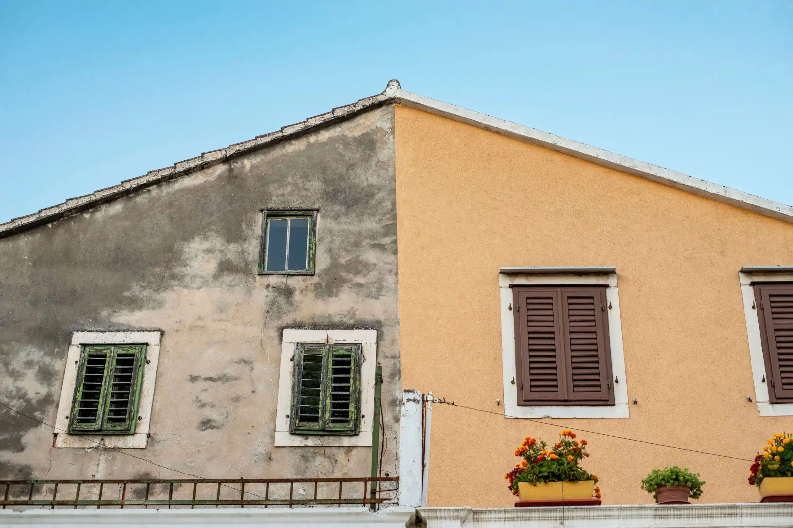

Ravalement de façade
Qu’est-ce qu’un ravalement de façade ?
Le ravalement de façade consiste à remettre en état et à protéger les murs extérieurs d’une maison ou d’un bâtiment. Il permet de nettoyer, réparer et appliquer une peinture de façade ou un revêtement afin de préserver l’étanchéité, l’isolation et l’esthétique de l’habitation.
Réalisé avec des produits adaptés et résistants, le ravalement améliore la protection contre l’humidité, la pollution et les fissures, tout en redonnant une nouvelle jeunesse à vos murs extérieurs.
Quand faut-il faire un ravalement de façade ?
Un ravalement est recommandé lorsque vos façades présentent des fissures, des traces d’humidité, un décollement de peinture ou simplement une usure esthétique. La loi peut également l’imposer dans certaines communes tous les 10 ans pour garantir la salubrité des bâtiments.
C’est aussi l’occasion idéale de rénover votre maison et d’y apporter une valeur ajoutée en améliorant son apparence et sa durabilité.
Quel est le prix d’un ravalement de façade ?
Le tarif d’un ravalement de façade varie selon plusieurs critères : l’état des murs, la surface totale à traiter, le type de finition choisie (peinture, enduit, crépi) ainsi que les travaux complémentaires éventuels (isolation, étanchéité, réparations).
Pour obtenir une estimation précise et adaptée à votre projet, contactez-nous dès aujourd’hui. Appelez-nous au 06 21 81 16 63 ou remplissez notre formulaire en ligne pour un devis gratuit et personnalisé.
CONTACTEZ - NOUS